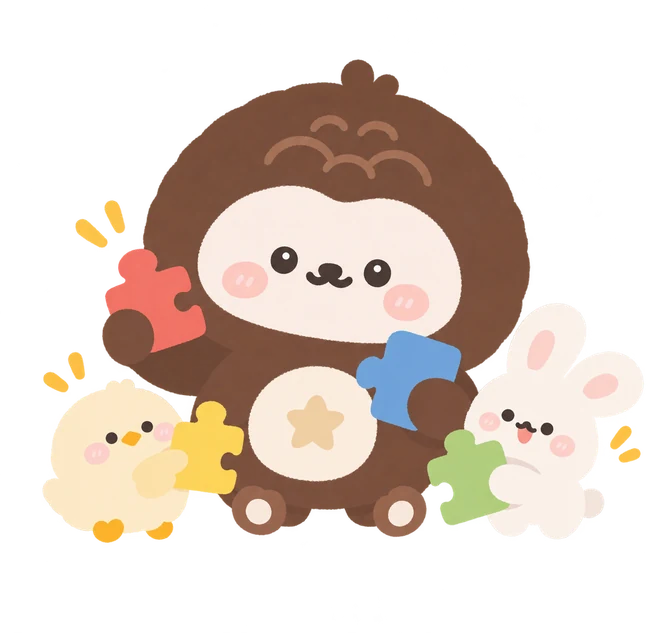
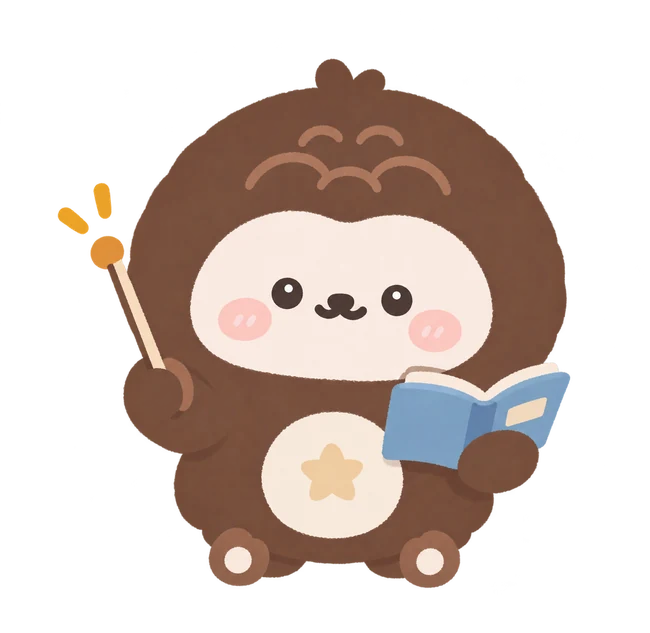
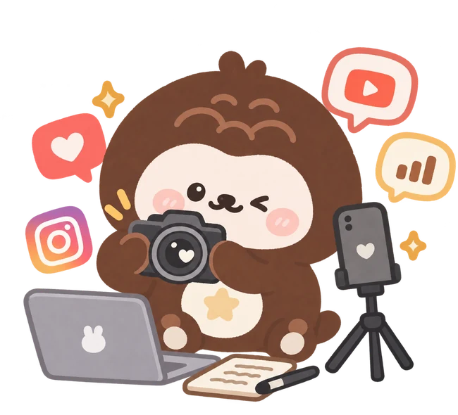

ROLE 01
勇於實踐的青年創業者
從自主品牌到團隊創業，練習讓創意走進真實市場。
讓創意落地，也讓每次嘗試成為下一步的養分。
從自主品牌到團隊創業，練習讓創意走進真實市場。
讓創意落地，也讓每次嘗試成為下一步的養分。

從青年小聚到跨校合作，創造讓不同經驗相遇的機會。
讓一個人的想法，成為一群人的行動。

透過教學與議題行動，讓學生有機會親自表達與參與。
讓每個人都擁有發聲與實踐的力量。

以影片與故事傳遞資訊，讓值得被理解的議題被看見。
以故事連結人群，將流量轉化為影響力。
這九段經歷不完全依時間先後排列，而是以能力與學習方向串聯。點選照片可放大檢視實際作品與活動紀錄。
從喜歡設計，到踏出創業的第一步
一開始，我只是單純喜歡設計。後來我開始思考，既然自己這麼喜歡創作，為什麼不試著把作品分享出去，甚至讓它成為一個真正的品牌？於是，我創立「販售浪漫」，從永生花、串珠商品開始，一步步摸索商品設計、社群經營與販售的過程。
原來創業不只是把喜歡的事情變成商品，而是從人們的需求出發，讓自己的創意成為別人生活中的一部分。這段經歷也成為我持續探索品牌行銷與青年創業的起點。
✳ 從喜歡的事出發，把創意帶進真實生活。
從一個想法，開始思考如何解決問題
我參加創創火箭營工作坊，與團隊提出「線上贊助媒合平台」，希望透過數位平台，讓有資源需求的人與願意提供支持的人更容易找到彼此；這項提案也獲得工作坊第一名。
後來，我參與青年發展署青少年就學相關的聊天機器人專案，嘗試將資訊科技運用在青少年的生涯規劃與就學輔導上。從資源媒合到青少年服務，我逐漸認為，創新不只是提出新奇的點子，而是願意從生活中發現問題，再結合不同領域的專長，讓想法有機會成為真正能幫助他人的服務。
✳ 真正的創新，從理解別人的需要開始。
從分享生活，到站在受眾的角度思考
從美妝保養、生活用品到電子科技周邊，我陸續累積了超過 20 個不同類型的品牌合作經驗。每次合作對我來說都是新的挑戰，因為不同品牌有不同的特色，面對的消費者也不一樣。我開始思考：如何透過不同的故事與呈現方式，引起觀眾的興趣？
我也開始相信，影片的力量不只在於讓商品被看見，更能讓值得分享的故事、資源與理念，被真正需要的人看見。
✳ 內容不只為了曝光，更為了建立理解。
從社群經營，到團隊創業
經營社群多年，我發現許多大學生並不是不夠努力，而是因為資訊落差，錯過了原本可以爭取的機會。我開始思考，能不能運用自己的行銷能力，讓更多大學生看見這些資源？於是，我與夥伴通過教育部 U-Start 創業計畫，創立「贊尼工作室」，推出「大學生不踩雷」系列，分享學習資源、校園生活與創業經驗，短短一個半月便累積超過 8,000 名粉絲、450 萬次瀏覽。
後來，我們推出「心願快線」大專院校聖誕傳情活動，將社群上的關注轉為實際的跨校合作。從主動聯繫數百間學校、規劃行銷策略、製作宣傳影片，到協調合作與處理訂單，我逐漸體會到，創業不只是有好的想法，更需要面對資源整合、團隊分工與執行過程中的各種挑戰。
✳ 創造流量只是起點，更重要的是讓合作持續發生。
從喜歡創作，到讓設計發揮價值
從小就喜歡畫畫與設計的我，大學時決定將興趣帶進校園，先後擔任學生會財務部員、美宣部長。從活動海報、紀念品到學校招生網站，我累積超過 100 件設計作品，也嘗試創作原創貼圖，讓自己的創意以不同形式被看見。
過程中，我發現設計不只是展現美感，更需要理解使用者的需求，讓資訊被清楚傳達、讓活動更容易吸引參與。這也讓我學會將個人專長轉化為團隊資源，奠定日後投入品牌行銷與跨域合作的基礎。
✳ 設計，是讓資訊與人更容易連結的方式。
從小聚，看見跨域交流的力量
「閱人」起源於臺灣大學。我與夥伴共同創辦「暨南閱人」，希望讓不同背景的青年透過小聚分享故事、交流經驗。
我們舉辦 5 場小聚，我負責場地與器材規劃，也親自擔任講者。過程中發現，每位講者需要的交流方式不同，因此我會依活動性質調整場地，讓參與者更容易互動。
✳ 好的交流不只在分享內容，也在於創造彼此連結的空間。
從一杯咖啡，看見產業更多可能
跟隨 USR「水沙連產業永續發展計畫」前往泰國清邁大學，參與當地咖啡課程交流，我開始從不同角度認識產業。
一杯看似平凡的咖啡，也能成為認識地方特色與文化的起點。地方產業不只是商品，更能結合教育與文化，創造交流的機會。
✳ 在地產業，也可以是一堂連結文化與世界的課。
從陪伴一位學生，到支持更多孩子成長
從大學伴、帶班老師到學輔組長，我逐漸從照顧學生的學習，延伸到協調師資與管理團隊，並獲得傑出大學伴、傑出帶班老師的肯定。
擔任偏鄉夏日樂學營隊總籌時，我將科技、設計與在地文化融入課程，讓孩子透過遊戲與實作主動參與。
✳ 教育不只是傳授知識，更是整合資源、創造機會。
從教育出發，讓偏鄉孩子親自說自己的故事
投入數位學伴多年，我發現外界對偏鄉的認識，常停留在資源不足、需要幫助的印象，但我所認識的孩子，每個人都有自己的故事與想法。我開始思考：為什麼偏鄉的故事，總是由別人替他們說，而不是讓孩子親自分享？
於是，我與夥伴組成 LinkEDU 教育團隊，參與 Social Designer 教育議題競賽。我們訪談 19 位學生及教育工作者，將真實經歷轉化為線上心理測驗；更重要的是，我們培訓學生自己製作簡報、整理成長經歷，並走進校園擔任講者，親自站上台分享自己的故事。
我們希望孩子不只是被介紹的對象，更能成為主動表達、與他人對話的人。團隊也從課堂回饋中，看到參與學生對偏鄉原有印象的轉變。
✳ 真正有意義的社會創新，是讓當事人擁有發聲與參與的力量。
過去的實踐讓我逐漸理解：一場活動可以帶來交流，一篇貼文可以吸引關注，一項專案也能完成眼前的目標。但如何延續合作、整合資源、支持參與者繼續成長，是我希望不斷學習的課題。
我期待將創業、設計、媒體與教育累積的經驗進一步整合，從單次企劃走向更能持續運作的模式，讓更多人有機會參與、表達，並在合作之中創造新的價值。